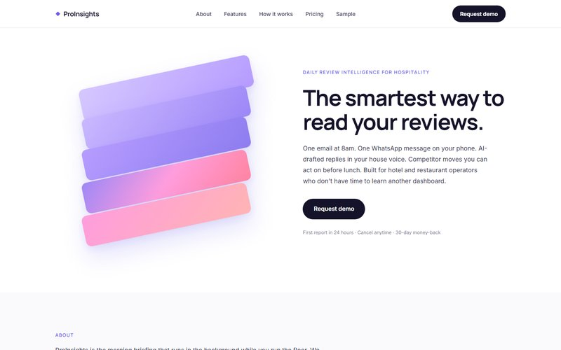

OPTION A · Analytix-style
Modern data product
White background. Split hero: 3D stacked gradient sculpture on the left, "The smartest way to read your reviews." on the right. Manrope sans, headline case. Three-up pale cards, accordion sections, phone mockup with WhatsApp preview. Modern data-SaaS feel — similar to Datadog, Linear, Snowflake.